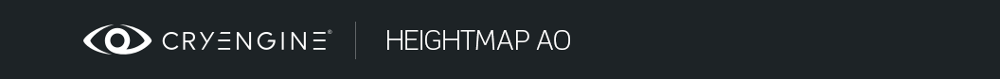
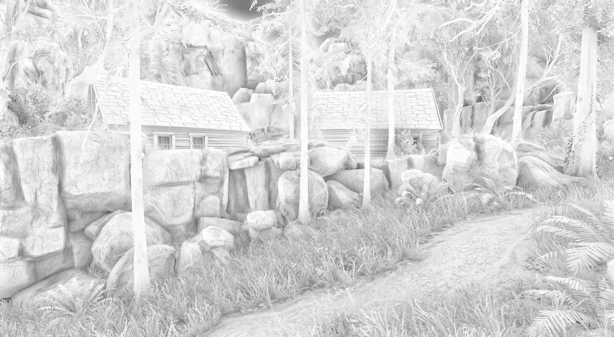
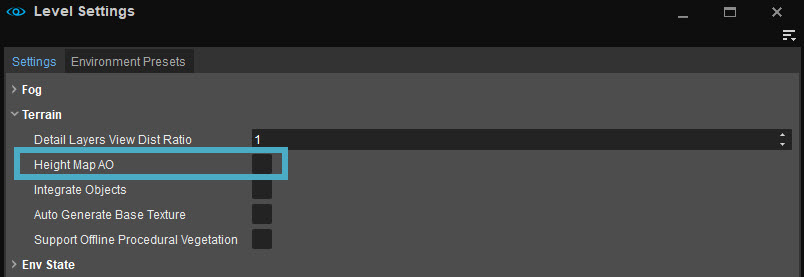

Overview
CRYENGINE provides an extremely efficient, yet highly approximate large scale ambient occlusion solution for outdoor environments. In combination with Screen Space Directional Occlusion (SSDO) and Height Map Ambient Occlusion (Height Map AO), additional shading cues are provided to the eye that yield enhanced depth perception of a scene.

Click the images for an On/Off comparison
Usage
Height Map AO can be enabled via the Level Settings → Settings tab as shown in the image below.

When active, occlusion is evaluated based on a height map representation of the scene. By default, the evaluation is performed at quarter display resolution, though the CVar r_HeightMapAO allows evaluation at half or even full resolution as well.
The influence of Height Map AO can be restricted via Clip Volumes and Vis Areas: Both object types provide a IgnoreHeightMap AO checkbox which will locally disable Height Map AO inside the volume.
Related CVars
- r_HeightMapAO: 0=off, 1=quarter resolution, 2=half resolution, 3=full resolution
- r_HeightMapAOAmount: Strength of the occlusion effect when combined with the scene
- r_HeightMapAORange: Area around the viewer which is affected by Height Map AO
- r_HeightMapAOResolution: Texture resolution of the height map used for approximating the scene